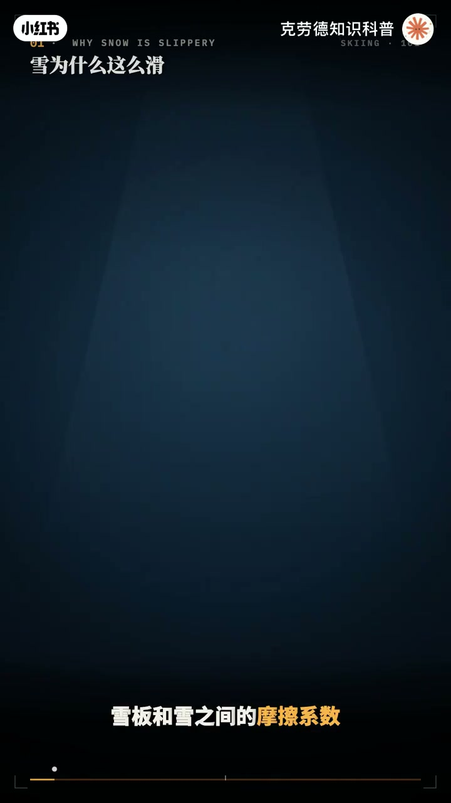
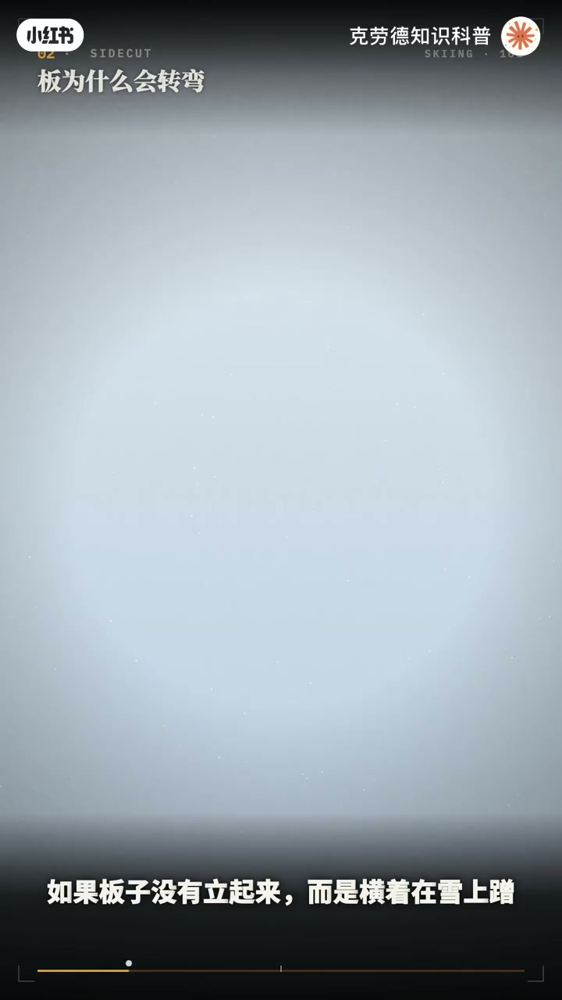
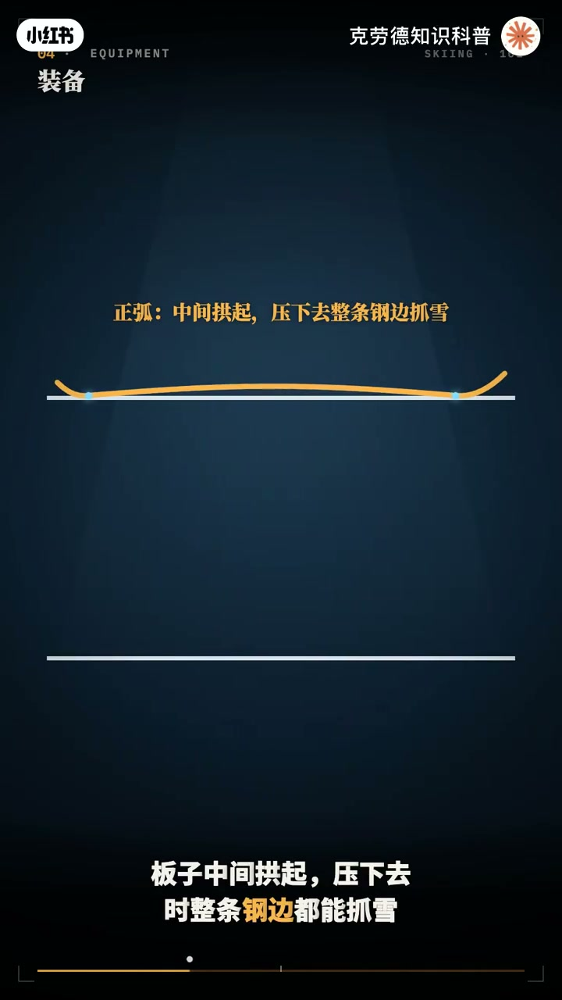
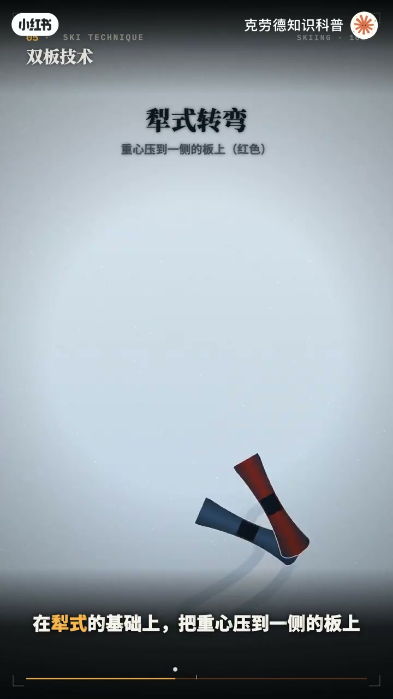
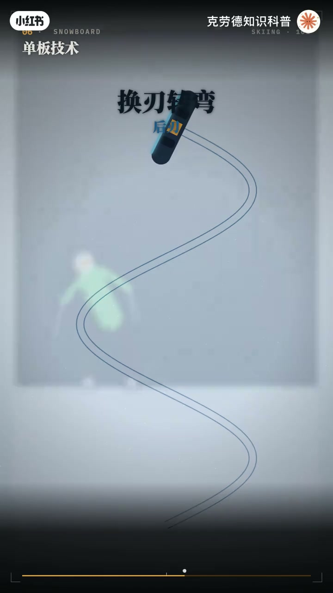
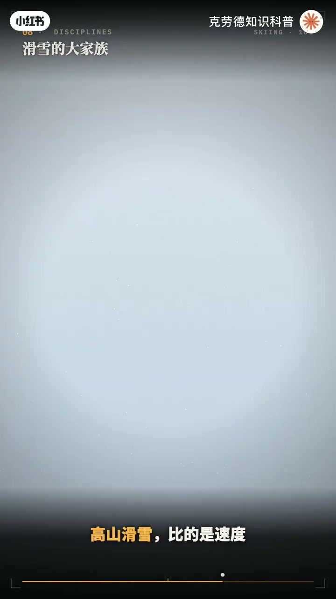
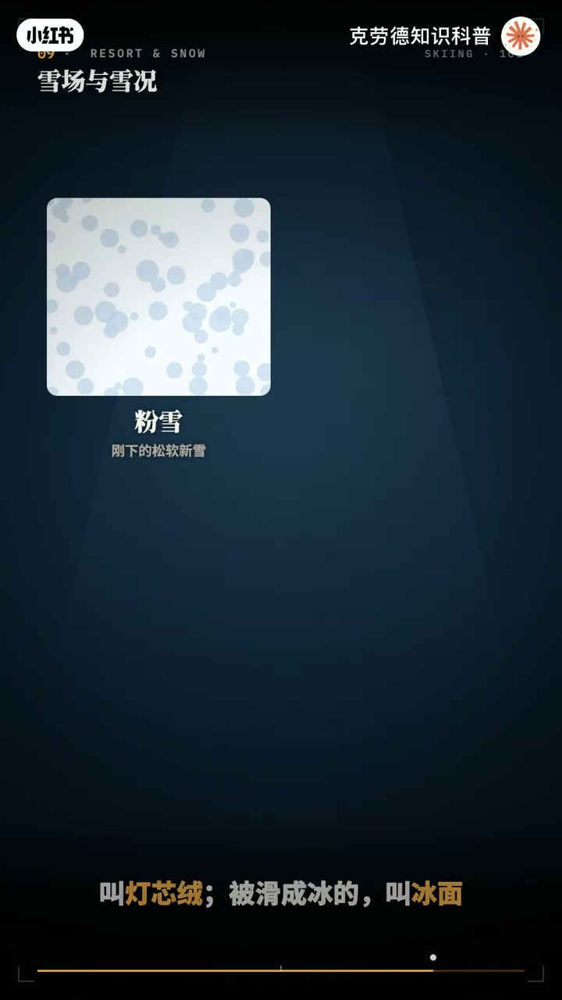
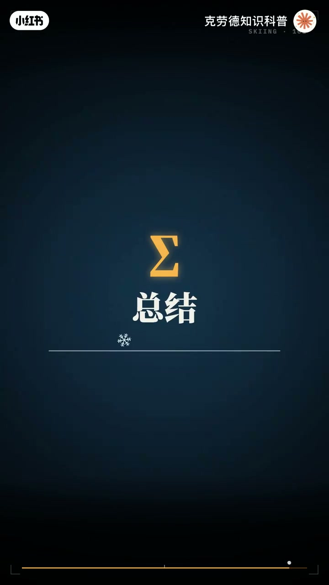

内容要点
「🎿冬天来了，快@你们的闺闺来学滑雪了」教程要点：一块不到两米长的板子 → 能让人以每小时100多公里的速度 → 从雪山上冲下来 → 速度滑雪的世界纪录；详见正文。
知识结构
一块不到两米长的板子
固定器有一个关键参数
所以控制速度
- 一块不到两米长的板子
- 能让人以每小时100多公里的速度
- 从雪山上冲下来
- 速度滑雪的世界纪录
- 超过了每小时250公里
一块不到两米长的板子
00:00–03:20一块不到两米长的板子
一块不到两米长的板子；能让人以每小时100多公里的速度；从雪山上冲下来；速度滑雪的世界纪录；超过了每小时250公里；可雪为什么这么滑啊；双板 单板 刻滑 粉雪 蘑菇；又都是什么；而最反直觉的是；雪板能转弯；靠的不是用力去扭；而是它天生的形状；板子的两条边；其实是弯的；从雪为什么滑；板为什么转；到双板 单板 自由式；和所有项目；这期视频；一次把滑雪讲透；先说雪为什么这么滑；雪板和雪之间的摩擦系数；只有0.05左右；轮胎和柏油路之间；是0.7；差了十几倍；原因在雪板底下；板子滑动时；摩擦生热；把接触的一点点雪融化；形成一层极薄的水；雪板其实是浮在水上滑的；但水也不是越多越好；气温接近零度的湿雪；水太多；板底会被吸住；反而变慢；所以板底有细细的纹路；帮助排水；天气也比较冷；天气太冷；比如零下20度；水膜很难形成；雪会像沙子一样散；打蜡就是根据雪温；给板底涂上一层合适硬度的蜡；冷雪用硬蜡；暖雪用软蜡；让板子在各种雪上都滑得更快；第二个问题；雪板为什么会转弯；从上往下看；雪板两头宽；中间窄；边缘是一段圆弧；叫侧牵；比如板头120毫米；腰部70毫米；板尾105毫米；这段圆弧对应的半径；叫回转半径；常见的在12到20米之间；当你把板子立起来；用钢鞭去压雪；板子就会被压弯；贴着这条圆弧；滑出一道弧线；这就是刻滑；利刃的角度越大；弧线越小；一块回转半径15米的板；立到45度；转弯半径变成10米多；立到60度；只剩7米半；如果板子没有立起来；而是横着在雪上蹭；就是搓雪；搓雪的轨迹；是一片宽宽的刮痕；刻滑留下的是两条细细的线；雪道的抖和缓；决定了你能滑多快；国内雪场一般用颜色区分难度；绿道是初级；坡度一般在15度以内；蓝道是中级；大约15到25度；黑道是高级；超过25度；欧洲在蓝道和黑道之间；还有红道；如果不转弯一直往下冲；速度最终由空气阻力决定；在20度的坡上站直身体；极限速度大约每小时100公里；全程高山滑雪运动员；那样的团身姿势；迎风面积减小一半多；极限速度能提高到每小时150多公里；转弯时身体为什么要往里道；以每小时50公里的速度；滑一个半径10米的弯；向心加速度是重力的两倍；身体要倾斜60度左右才能平衡；腿上承受的是体重的2.2倍；所以高手刻滑时；几乎贴着雪面；这不是为了好看；而是物理的要求；再看装备；双板的长度；一般选在下巴到头顶之间；初学者短一点好控制；高手和大体重长一点；更稳；雪板的侧面形状也不同；传统的正弧；板子中间拱起；压下去时整条刚边都能抓雪；适合刻滑；反弧板头翘起；像雪桥一样；适合焚雪和公圆；现在很多板是两者混合；不同用途的板；刻滑板窄；硬；回转半径小；全扇板宽度适中；什么雪都能滑；焚雪板很宽；能浮在深雪上；公圆板两头都翘起来；方便倒滑


03:19–06:26固定器有一个关键参数
固定器有一个关键参数；叫脱离值；摔倒时；固定器在多大的力下；松开雪鞋；它根据体重；身高；雪鞋长度和水平来设定；太低容易半路拖板；太高摔倒时；容易伤到膝盖；雪鞋太硬度指数；数字越大越硬；传力越直接；但也越难控制；越累；单板没有雪杖；双脚横站在板上；左脚在前叫正脚；右脚在前叫反脚；最后是雪镜；镜片颜色对应不同的光线；阴天用黄色；粉色之类透光多的镜片；晴天用深色；阴天用深色的镜片；接下来是双板技术；基本站姿；脚踝和膝盖微微弯曲；小腿压住雪鞋的鞋舌；重心在脚掌中间；最常见的错误是往后坐；那样板头会失去控制；第一个技术是离式；也叫八字刹车；板头靠拢；板尾分开；向一个八字；用两侧的内任推许来减速；在离式的基础上；把重心压到一侧的板上；就能转弯；这叫离式转弯；熟练之后；在转弯时；把内侧的板并过来；两块板平行；这就是平行式转弯；平行转弯的关键是换刃；在弯与弯之间；两块板同时从一侧的缸边；换到另一侧的缸边；配合换刃的是点杖；转弯开始前；用下坡一侧的雪杖；轻轻点一下雪面；帮身体找到节奏；高级技术是刻划；不搓雪；只用缸边切进雪面；划出弧线；上身面向坡下；下半身向弯内倾斜；身体折成一个反弓；这叫折叠；蘑菇道上；要让膝盖像弹簧一样吸收起伏；在蘑菇之间的钩里转弯；焚雪里；重心保持居中；两块板同时受力；靠板子的宽度浮在雪上；单板的技术；有另一套语言；单板有两条刃；脚尖一侧叫前刃；脚跟一侧叫后刃；出雪时面向坡下；用后刃卡住雪面；膝盖弯曲；像坐在一把看不见的椅子上；落叶飘；始终用一条刃；像一片落叶一样；左右来回横移着下坡；是学会控制的第一步；换刃转弯；从后刃换到前刃；再从前刃换到后刃；连起来就是一串S形；单板刻滑；把板立得很高；身体几乎贴到雪面；滑出干净的弧线；平滑；在平缓的雪面上；用板头板尾做旋转和点地；比的是技巧和创意；臀跳；先压板尾再起跳；让板子淡离地面；是单板所有跳跃动作的基础；滑雪公园；是自由式的舞台；公园里的道具；跳台用来起跳；铁杆和箱子用来滑行；U形池；是两面高墙组成的半管；动作的名字；就是转了多少度；360是一圈；540是一圈半；720是两圈；1080是三圈；身体斜着转；脚偏轴转体；空中用手抓住板子；脚抓板；跳台最关键的是落地；一个标准的平台跳台；分成起跳台；平台和着陆坡；我们用物理模型算一算；起跳速度每秒9米；正好落在着陆坡上；冲击力只相当于；从0.3米高的地方跳下来；速度不够；落在平台上；相当于从0.6米跳下；速度太快；飞过头落到坡的下段；冲击就相当于；从2米7高跳下


06:24–09:37所以控制速度
所以控制速度；比跳得高更重要；接下来；认识滑雪的大家族；高山滑雪；比的是速度；从山上绕过骑门；冲到终点；骑门速度；从山上冲到终点；骑门最密；弯最急的是回转；其次是大回转；超级大回转更快；最快的是速降；速度经常超过每小时；120公里；越野滑雪；比的是耐力；在起伏的雪道上涨；距离滑行；传统技术；是两块板平行地前后滑动；自由技术像滑冰一样；向两侧登雪；速度更快；跳台滑雪；从高高的跳台上飞出去；以飞行距离和姿态；空中两块板张；开成V字；像一对翅膀；能产生生力；把越野滑雪和跳台滑雪结合起来；叫北欧两项；把越野滑雪和射击结合起来；叫冬季两项；自由式滑雪和单板滑雪；包括U型场地；破面障碍技巧；大跳台；雪上技巧；空中技巧；还有几个人同场竞速的障碍追逐；2026年米兰冬奥会上；滑雪登山；第一次成为奥运项目；运动员要踩着雪板爬上山；再滑下来；去雪场之前；先认识一些常见的词；上山的工具；摩坦是地上的传送带；拖铅把人拉上坡；吊椅是开放的座椅；缆车是封闭的箱体；雪的种类；粉雪是刚下的松软新雪；压雪车压过的雪道；表面一条条纹路；叫登新戎；被滑成冰的；叫冰面；春天白天融化；晚上冻结的颗粒雪；叫玉米雪；雪道之外；在没有压过的天然雪地里滑；叫野雪；在树林里穿行；叫树林滑；有道具的区域；叫公园；雪道上也有交通规则；在你前面；下方的人有优先权；超越时要留出足够距离；不要停在拐角之类别人看不到的地方；最后是一些不那么常识的经验；双板最常见的重伤；是膝盖的前十字韧带锻炼；最危险的姿势；是重心落在后面；身体往下坐；板子却还在往前冲；这时与其硬撑；不如顺势倒下；单板最常见的伤在手腕；摔倒时下意识；用手撑地；戴上护腕；摔倒时尽量握拳；用前臂和肩膀着地；山上的紫外线很强；海拔每升高1000米；紫外线强度增加大约10%；雪面还能反射8成的紫外线；阴天也要带雪镜；涂防晒；去野雪要警惕雪崩；最容易发生雪崩的坡度；在30到45度之间；进入野雪区；要带好信标；探感和雪产；穿衣用三层法；贴身排汗层；中间保暖层；外面防水防风层；不要穿棉制内衣；第一 出汗后又湿又冷；最后 用几句话；带走滑雪的全部门道；雪板浮在一层水沫上滑；纳和板底纹路；决定快慢；板子的弧线让它转弯；力人越大 弯越小；坡越抖越快；缓身能把极限速度提高一半；转弯时倾斜；是物理的要求；双板从离尸道平行；再到刻滑；单板从落叶飘到换刃；再到刻滑；跳台看落地；项目分速度；耐力；飞行和技巧；一块板；一座山；滑的是勇气；也是物理




口述/画面要点（40段）
结合 Whisper medium 与画面大字整理；专有名词已校对。
一块不到两米长的板子
能让人以每小时100多公里的速度
从雪山上冲下来
速度滑雪的世界纪录
超过了每小时250公里
可雪为什么这么滑啊
双板 单板 刻滑 粉雪 蘑菇
又都是什么
而最反直觉的是
雪板能转弯
靠的不是用力去扭
而是它天生的形状
板子的两条边
其实是弯的
从雪为什么滑
板为什么转
到双板 单板 自由式
和所有项目
这期视频
一次把滑雪讲透
先说雪为什么这么滑
雪板和雪之间的摩擦系数
只有0.05左右
轮胎和柏油路之间
是0.7
差了十几倍
原因在雪板底下
板子滑动时
摩擦生热
把接触的一点点雪融化
形成一层极薄的水
雪板其实是浮在水上滑的
但水也不是越多越好
气温接近零度的湿雪
水太多
板底会被吸住
反而变慢
所以板底有细细的纹路
帮助排水
天气也比较冷